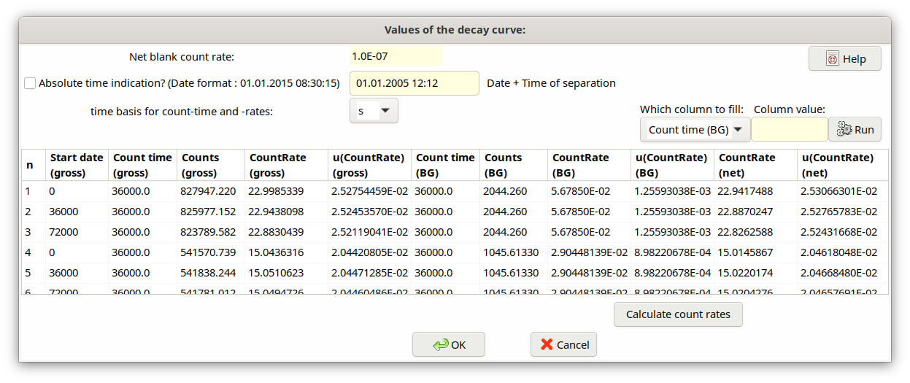
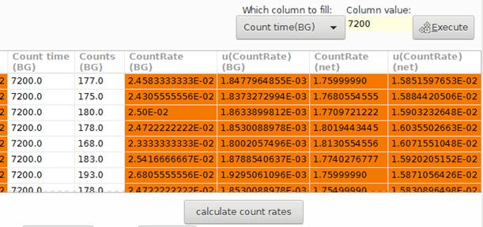

5.10. Dialog “Values of decay curve”¶
The following picture gives an overview of the structure of the dialog.
Initially, in this dialog date and time of the Y-90/Sr-90 separation is entered using the format “DD.MM.YYYY HH:MM:SS”, e.g. “12.06.2006 09:05:00”. It is recommended to use the 4-digit version of the year. The program internally replaces all decimal dots by blanks and then reads the six date/time elements format-free.
One can choose between s and min for the basis time unit for the counting time. Internally, if min is chosen by the user, this is converted to the basic unit s.
The value of the net blank counting rate shown (disabled) in this dialog is that of the symbol Rbl, which has been entered by the user within the TAB „Values, uncertainties“. It must not contain a detector background contribution.
For the input of the single measurement values of the decay curve a table with 11 columns is available, the 11 columns of which have the following meaning; therein, only those columns shown in black color shall be filled in by the user, while the columns with red color are calculated by the program (see below).
Column
|
Name
|
Meaning
|
|---|---|---|
1
|
Start date
|
Date/time of the start of the k-th measurement
(input format as shown above), or,
time duration between Y-90/Sr-90 separation and
the start of the k-th measurement (as a number
with decimal point); the program realizes
automatically which of the two possibilities is
used.
|
2 |
Count time |
Counting time of the k-th measurement |
3 |
Counts |
Gross counts of the k-th measurement |
4 |
CountRate |
Calculated gross counting rate |
5 |
u(CountRate) |
Uncertainty of the gross counting rate |
6 |
Count time |
Counting time of the k-th background measurement |
7 |
Counts |
Counts of the k-th background measurement |
8 |
CountRate |
Calculated background counting rate |
9 |
u(CountRate) |
Uncertainty of the background counting rate |
10 |
NetCountRate |
Calculated net counting rate |
11 |
u(NetCountRate) |
Uncertainty of the net counting rate |
With the button „Calculate count rates“ the values of gross counting rate, background counting rate and the net counting rate as well as their associated uncertainties are calculated in the columns 4/5, 8/9 and 10/11 (in the columns marked by red color). In this calculation, the value of the net blank counting rate :math:`R_{bl}` is considered (see above).
Simplifying input to columns 2, 6 und 7:
A new option within this dialog has been inserted, by which within one of these columns a fixed value can be transferred to all necessary cells within the selected column.
Tip
Import from ASCII file: If the values to be entered into the first three columns exist as an ASCII file, also column-wise separated, each of those columns (one after another) can be marked and copied into the Windows clipboard and pasted into the corresponding UncertRadio dialog column (right Mouse button: “paste”). The mouse pointer needs only to be set into the uppermost cell of this column in advance.
Tip
Import from Excel file: If the values to be entered exist already in an Excel file they can be copied with a mouse operation “copy and paste” via Windows clipboard to the corresponding cell area in the UncertRadio dialog. In this case, all three columns can be copied simultaneously in one step.
Further information about Within tables: delete rows, working with column blocks